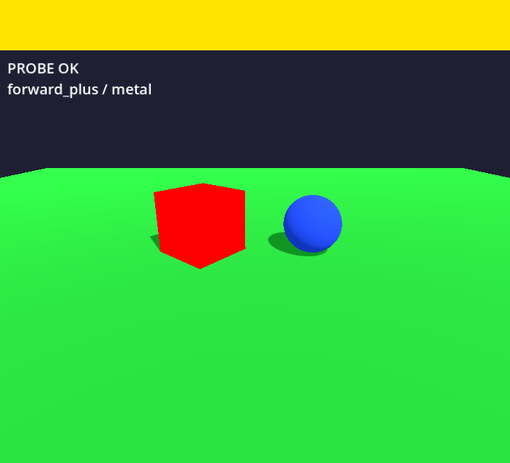
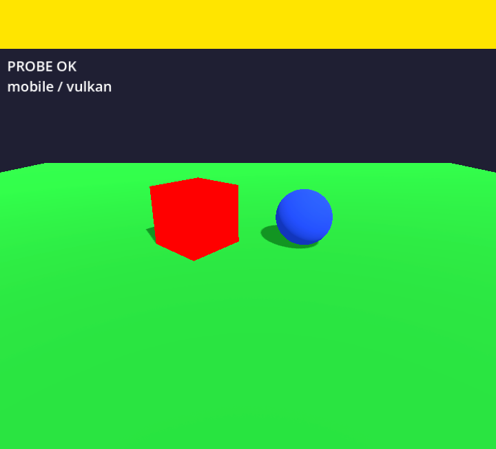
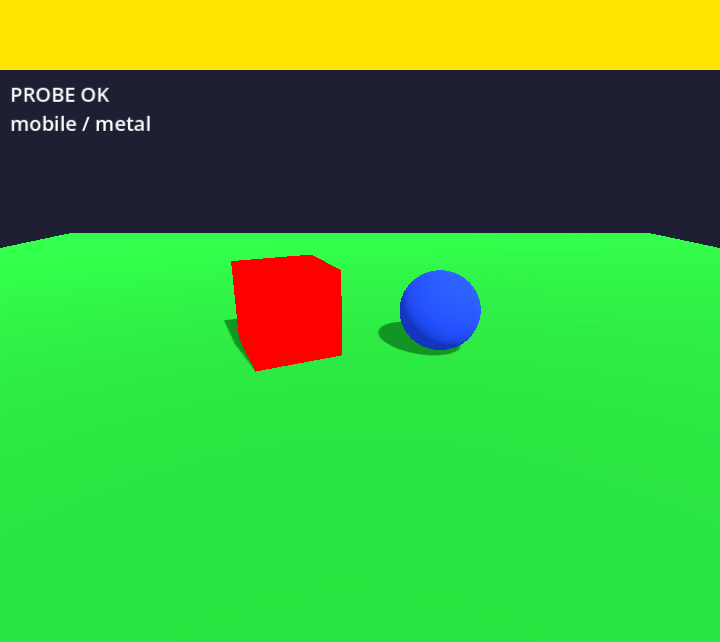
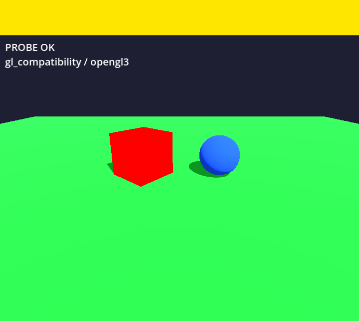
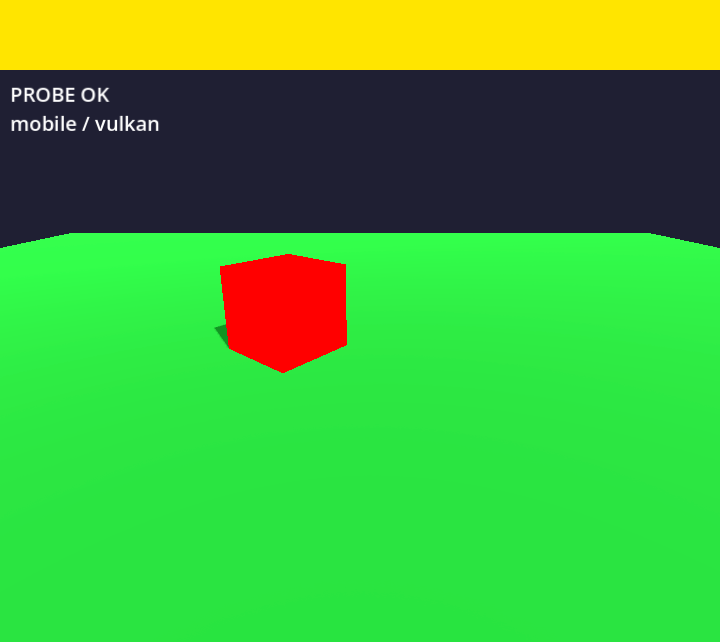

| variant | gpu / mode | verdict | shader errors | black % | fps |
|---|---|---|---|---|---|
| macos-15 | metal-forward_plus | PASS_3D_AND_2D | 0 | 0.0 | 60 |
| macos-15 | metal-mobile | PASS_3D_AND_2D | 0 | 0.0 | 61 |
| macos-15 | opengl3-compat | PASS_3D_AND_2D | 0 | 0.0 | 59 |
| macos-15 | vulkan-moltenvk-mobile | PASS_3D_AND_2D | 0 | 0.0 | 58 |
| macos-26 | metal-forward_plus | PASS_3D_AND_2D | 0 | 0.0 | 60 |
| macos-26 | metal-mobile | PASS_3D_AND_2D | 0 | 0.0 | 60 |
| macos-26 | opengl3-compat | PASS_3D_AND_2D | 0 | 0.0 | 60 |
| macos-26 | vulkan-moltenvk-mobile | PASS_3D_AND_2D | 0 | 0.0 | 60 |
method=forward_plus driver=metal adapter=Apple Paravirtual device (Apple5) vendor=Apple api=3.2 os=macOS
recoveries: []
pixels: {"black_pct": 0.0, "red_pct": 2.67, "blue_pct": 1.1, "green_pct": 59.84, "yellow_pct": 10.7, "size": [720, 653]}
emulator: macos-15
method=mobile driver=metal adapter=Apple Paravirtual device (Apple5) vendor=Apple api=3.2 os=macOS
recoveries: []
pixels: {"black_pct": 0.0, "red_pct": 2.67, "blue_pct": 1.1, "green_pct": 59.85, "yellow_pct": 10.7, "size": [720, 653]}
emulator: macos-15logcat · result.jsonmethod=gl_compatibility driver=opengl3 adapter=ANGLE (Apple, ANGLE Metal Renderer: Apple Paravirtual device, Version 15.7.9 (Build 24G830)) vendor=Google Inc. (Apple) api=OpenGL ES 3.0 (ANGLE 2.1.1 git hash: aaebda1c5a40) os=macOS
OpenGL API OpenGL ES 3.0 (ANGLE 2.1.1 git hash: aaebda1c5a40) - Compatibility - Using Device: Google Inc. (Apple) - ANGLE (Apple, ANGLE Metal Renderer: Apple Paravirtual device, Version 15.7.9 (Build 24G830))
recoveries: []
pixels: {"black_pct": 0.0, "red_pct": 2.68, "blue_pct": 1.11, "green_pct": 59.65, "yellow_pct": 10.98, "size": [720, 656]}
emulator: macos-15logcat · result.jsonmethod=mobile driver=vulkan adapter=Apple Paravirtual device vendor=Apple api=1.2.334 os=macOS
recoveries: []
pixels: {"black_pct": 0.0, "red_pct": 2.67, "blue_pct": 1.1, "green_pct": 59.85, "yellow_pct": 10.7, "size": [720, 653]}
emulator: macos-15
method=forward_plus driver=metal adapter=Apple Paravirtual device (Apple5) vendor=Apple api=4.0 os=macOS
recoveries: []
pixels: {"black_pct": 0.0, "red_pct": 2.62, "blue_pct": 1.09, "green_pct": 59.82, "yellow_pct": 10.9, "size": [720, 642]}
emulator: macos-26logcat · result.jsonmethod=mobile driver=metal adapter=Apple Paravirtual device (Apple5) vendor=Apple api=4.0 os=macOS
recoveries: []
pixels: {"black_pct": 0.0, "red_pct": 2.62, "blue_pct": 1.09, "green_pct": 59.82, "yellow_pct": 10.9, "size": [720, 642]}
emulator: macos-26
method=gl_compatibility driver=opengl3 adapter=ANGLE (Apple, ANGLE Metal Renderer: Apple Paravirtual device, Version 26.6.2 (Build 25G83)) vendor=Google Inc. (Apple) api=OpenGL ES 3.0 (ANGLE 2.1.1 git hash: aaebda1c5a40) os=macOS
OpenGL API OpenGL ES 3.0 (ANGLE 2.1.1 git hash: aaebda1c5a40) - Compatibility - Using Device: Google Inc. (Apple) - ANGLE (Apple, ANGLE Metal Renderer: Apple Paravirtual device, Version 26.6.2 (Build 25G83))
recoveries: []
pixels: {"black_pct": 0.0, "red_pct": 2.63, "blue_pct": 1.09, "green_pct": 59.72, "yellow_pct": 10.84, "size": [720, 645]}
emulator: macos-26
method=mobile driver=vulkan adapter=Apple Paravirtual device vendor=Apple api=1.2.334 os=macOS
recoveries: []
pixels: {"black_pct": 0.0, "red_pct": 2.62, "blue_pct": 0.0, "green_pct": 60.95, "yellow_pct": 10.9, "size": [720, 642]}
emulator: macos-26